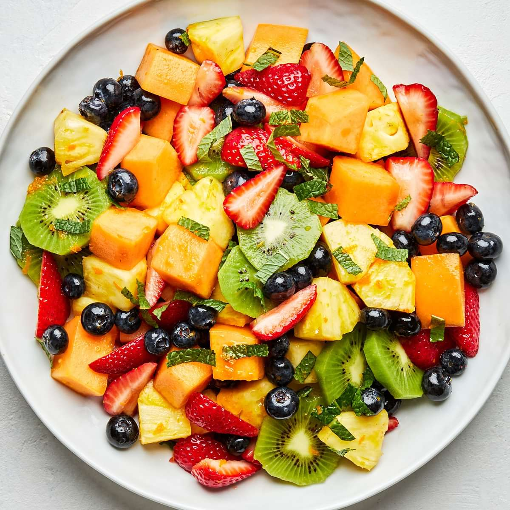

Delicious Quinoa Salad: A Nutrient-Packed Meal
If you're looking for a refreshing, nutritious meal, this quinoa salad is the perfect choice! Packed with vibrant veggies, protein-rich chickpeas, and a zesty lemon dressing, it’s a flavorful, filling dish that will leave you feeling energized and satisfied. Whether you're preparing a light lunch, a side dish, or even a post-workout meal, this salad offers all the nutrients you need to keep you going throughout the day.
Quinoa is a superfood, packed with essential nutrients like protein, fiber, and various vitamins and minerals. It’s a complete protein source, which means it contains all nine essential amino acids, making it a great option for vegetarians and vegans. Paired with fresh vegetables like cucumber, tomatoes, and bell peppers, this salad provides a colorful and tasty way to get your daily serving of vegetables.
The chickpeas add a boost of plant-based protein, making the salad even more satisfying. They’re also rich in fiber, which aids in digestion and helps keep you full longer. The combination of quinoa and chickpeas creates a balanced dish that’s not only delicious but also filling enough to be a complete meal on its own. You can easily adjust the ingredients to your preference, adding more veggies or switching up the dressing for a unique twist.
The zesty lemon dressing brings everything together with its tangy flavor, giving the salad a light, refreshing kick. Made with fresh lemon juice, olive oil, and a touch of garlic, this dressing is the perfect complement to the quinoa and veggies. It’s simple to make and enhances the natural flavors of the ingredients without overpowering them.
This quinoa salad is not only tasty and filling but also a nutritious powerhouse. It’s high in protein, fiber, and essential vitamins and minerals, making it an excellent option for anyone looking to eat healthier and feel their best. Whether you’re prepping meals for the week, looking for a quick lunch, or planning a light dinner, this quinoa salad is a versatile and delicious choice.
Give this recipe a try and discover just how easy it is to make a nutrient-packed meal that’s both delicious and satisfying. Perfect for those on-the-go, meal prep enthusiasts, or anyone looking to enjoy a fresh, wholesome dish!